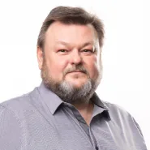
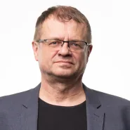
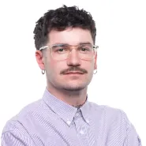
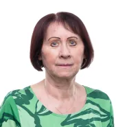
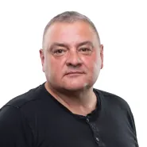
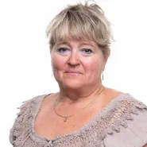
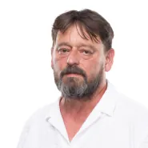
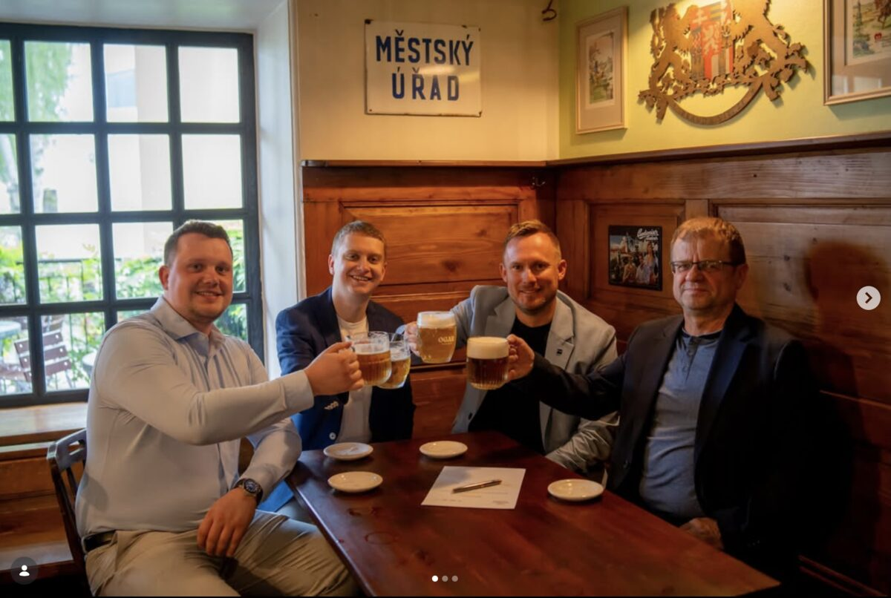
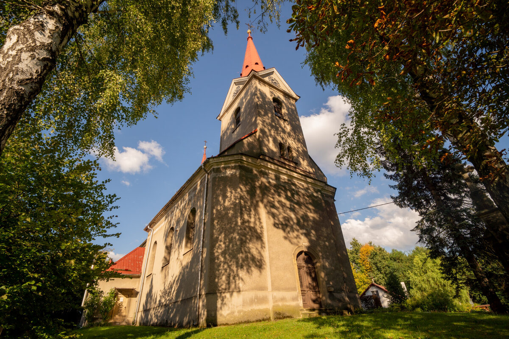
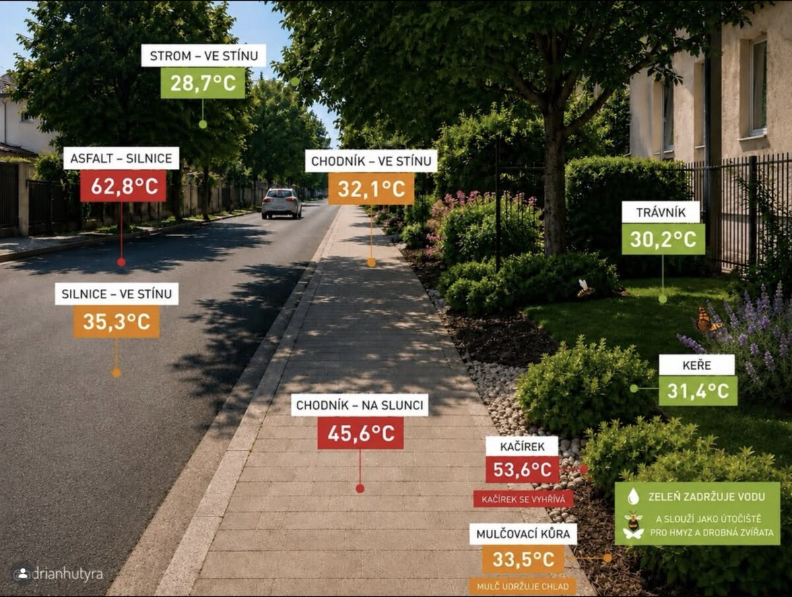

Chcete vědět proč
Společně?
Do komunálních voleb jdeme SPOLEČNĚ jako lidovci, ODS, TOP 09 a STAN. Táhneme za jeden provaz, protože víme, že jen spolupráce přináší výsledky a umožňuje měnit Frýdek-Místek k lepšímu. Za uplynulé období jsme ukázali, že umíme spojit síly a prosazovat projekty, které mají skutečný přínos pro obyvatele města. A taky umíme držet SLOVO.
Něco navíc
Společně v číslech
4strany v jedné koalici
43lidí, co chtějí pracovat pro Frýdek-Místek
6připravených letních akcí
9.–10. 10.termín voleb 2026
Naši kandidáti
První desítka
Kandidujeme společně
KDU-ČSL
ODS
STAN
TOP 09
Kompletní kandidátka 2026
Seznam kandidátů
1. Marcel Sikora
náměstek primátora pro sociální oblast, zakladatel sběrného místa kola pro Afriku ve Frýdku-Místku
2. Adrian Hutyra
marketingový specialista, předseda osadního výboru Lískovec
3. Lukáš Slíva
náměstek primátora, pedagog a lektor
4. Libor Lepík
středoškolský učitel
5. Martin Kleinwächter
spolumajitel tiskárny, zastupitel města
6. Radim Kocourek
zubní lékař
7. Libor Janečka
majitel farmy Chlebovické brambory, předseda osadního výboru Chlebovice
8. Daniel Kajfoš
student VŠ
JB
9. Jana Blahutová
zástupkyně ředitele SŠ řemesel
10. Eliška Wyková
pedagožka
11. Tomáš Benedikt Zbranek
ředitel Městské knihovny Frýdek-Místek
MJ
12. Miroslav Janoviak
generální ředitel Povodí Odry

13. Libor Koval chemik
14. Vojtěch Rumian
pedagog na ZŠ, člen kulturní komise rady města
VŠ
15. Veronika Šebestová
projektová manažerka v sociálních službách

16. Václav Daněk stavební technik
FS
17. Filip Stres
vychovatel v dětském domově se školou
18. Jiří Matýsek
všeobecná sestra na úseku rehabilitace
19. Jan Caletka
důchodce, bývalý pedagog
20. Jana Kohutová
koordinátorka společenských akcí v Lidovém domě, členka farní rady
JŠ
21. Jana Šerá
ekonomka, vedoucí oddílu TJ Sokol, členka osadního výboru Chlebovice
PM
22. Pavel Mlýnek
obchodní manažer, zastupitel Moravskoslezského kraje
23. Richard Žabka
finanční poradce
24. Alexandr Wojčík
finanční ředitel, majitel tiskárny
25. Petr Adamus
pracovník bezpečnostní agentury
26. Vít Daněk
student VŠ
27. Pavel Hrtús
pracovník Charity Frýdek-Místek
JŠ
28. Jakub Šrubař
hostinský v Datlovně, lektor

29. Marek Špok holič, majitel studia Unicut
30. Jakub Rabas
specialista požární ochrany
PN
31. Petr Novák
jednatel společnosti v odvětví oprav komunikací
AK
32. Adam Krejčí
advokát

33. Ludmila Moniaková pracovnice Charity Frýdek-Místek
34. Dalibor Švejkovský
technik
35. Jan Liberda
jednatel Domova sv. Jana Křtitele v Lysůvkách

36. Tomáš Povala bývalý policejní komisař PČR
TK
37. Terezie Kovalová
manažerka

38. Petra Cihlová administrativní pracovník v dopravě
39. Igor Caysberger asistent pedagoga v MŠ
40. Ondrej Štupák
datový technik v protetice
41. Michal Pavlas
finanční auditor
42. Alex Hutyra
MMA zápasník v organizaci OKTAGON
43. Jan Bužek
stavbyvedoucí
Zobrazeno 12 z 43 kandidátů
Akce pro vás
Společně
17. července16.00
Areál restaurace Sokolík
Zahrát si cornhole
špekáčky zdarmahra Cornholeskákací hrad
Dospělí, děti i senioři — užijte si pohodové odpoledne u netradiční hry Cornhole. Popovídáme si, zasoutěžíme a opečeme špekáčky.
Lukáš Slíva
náměstek primátora, pedagog a lektor
1. srpna14.00
Chlebovjanka, Chlebovice
Na farmu za zvířátky
bramboráky zdarmakrmení zvířátek
Poznejte život na farmě, dejte si bramborák z chlebovických brambor a užijte si příjemné posezení s dětmi.
Libor Janečka
majitel farmy Chlebovické brambory, předseda osadního výboru Chlebovice
6. srpna17.00–19.00
Datlovna Pavlač
Na pivo
pivo za 30 Kčworkshop čepováníživá hudba
Pivo jako křen vám načepuji já nebo náš mistr výčepní. Přijďte ochutnat zlatavý mok, vyzkoušet si čepování a užít živou hudbu.
Daniel Kajfoš
student VŠ
13. srpna17.00–19.00
Restaurace Hájek u Barunky
Na guláš
guláš zdarmapivo a limoprogram pro děti
Dejte si můj poctivý kotlíkový guláš v Hájku u Barunky. Dobrá muzika a bohatý program pro děti jsou zajištěny.
Adrian Hutyra
marketingový specialista, předseda osadního výboru Lískovec
20. srpna16.00
Sraz u kavárny ŽIVO
Zasportovat na Olešnou
soutěžní stanovištěobčerstvení v cíli zdarma
Pěšky, na kole, na bruslích. Sportování zakončíme v kavárně ŽIVO, kde představíme naši vizi rozvoje rekreační zóny Olešná.
Martin Kleinwächter
spolumajitel tiskárny, zastupitel města
26. srpna19.30
Hospoda Bernard, T. G. Masaryka
Sledovat film
komedie „Pět švestek“popcorn zdarma
Léto oslavíme společně pod širým nebem! Přijďte si užít atmosféru večerního promítání, dobré pití a pohodovou komedii.
Radim Kocourek
zubní lékař
Společné
Všechny novinky →
Aktuality

Do voleb jdeme SPOLEČNĚ
Lidovci, ODS, TOP 09 a STAN táhnou za jeden provaz. Máme konkrétní výsledky — od rekonstrukce Českého domu po Domovinku pro seniory v Berlíně II až po podporu výstavby bytů — a jasný plán, jak dál rozvíjet moderní Frýdek-Místek pro děti, rodiny i seniory.
Číst více
Hodiny na kostele v Lískovci se vrací k životu
Horolezci provádějí repasi kostelních hodin sv. Šimona a Judy, které nefungovaly desítky let. Následují další opravy a nový nátěr střechy — díky sbírce DarujFM.
Číst více
Zelený a funkční prostor místo rozpáleného betonu
Extrémní vedra ukazují, proč je městská zeleň klíčová. Stromy a trávníky ochlazují okolí o desítky stupňů, zadržují vodu a zlepšují život ve městě. Chceme koncepčně vysazovat a pečovat o zeleň, pítka i vodní prvky.
Číst vícePro tuto kategorii zatím nemáme žádné novinky.
Společně pro Frýdek-Místek
Kdo jsme
Ke stažení